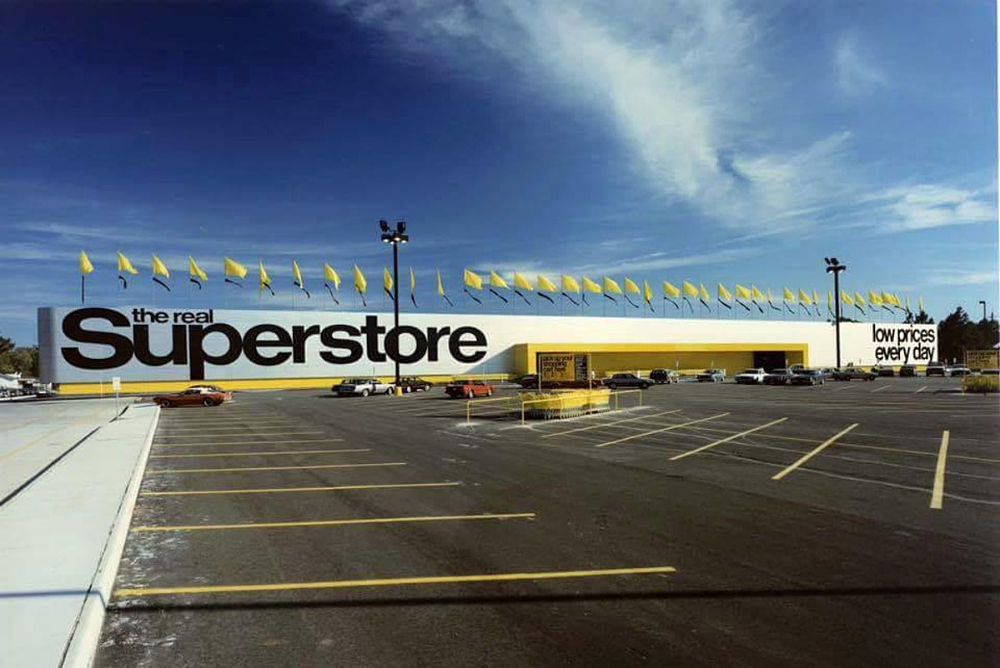

In my master's course, I studied a module named 'Business Software,' where my colleague and I were given a task of comparing business intelligence software such as Power BI and Tableau Public in 2022.
We analyzed a dataset related to a fictional automotive company that sells cars and bikes. We performed operations such as time series analysis, decision tree analysis, clustering, SWOT analysis, and drill functions on maps using both Tableau and Power BI. In our research, we concluded that Power BI offered some additional benefits compared to Tableau and hence scored higher on our matrix.

In this Power BI project, various key actions were undertaken, including importing, cleaning, and processing data, designing a dynamic dashboard with advanced charts and maps,
implementing filters and slicers for enhanced interactivity, and incorporating forecasting capabilities. The project's primary focus was on analyzing the data from a
superstore sales dataset, leading to the development of valuable project insights and valuable learning experiences.
This data exploration project focuses on analyzing the statistics of the COVID-19 pandemic using SQL.
The dataset used for this project is sourced from Ourworldindata.org and contains information on the number of cases, deaths, and recoveries from COVID-19 in different countries and regions.
The project aims to provide insights on how the pandemic has affected different areas over time and identify trends and patterns in the data.

This data cleaning project in SQL server involves cleaning, formatting and organizing a large dataset of housing data to improve data quality, accuracy, and consistency.
The project aims to identify and rectify any inconsistencies and inaccuracies in the dataset, such as incorrect data types, missing data, duplicate entries, and formatting errors.
The final output of the project will be a clean and well-structured
dataset that can be used for further analysis and insights into the housing market.
This project involves data cleaning and dashboard creation in Excel to analyze bike sales. The data is first cleaned to remove errors and inconsistencies. A
dashboard is then created to visualize sales trends, revenue, and performance by product, region, and time period with the option to filter insights based on gender, age and marital status. The dashboard may provides insights to make
data-driven decisions to improve sales and profitability.